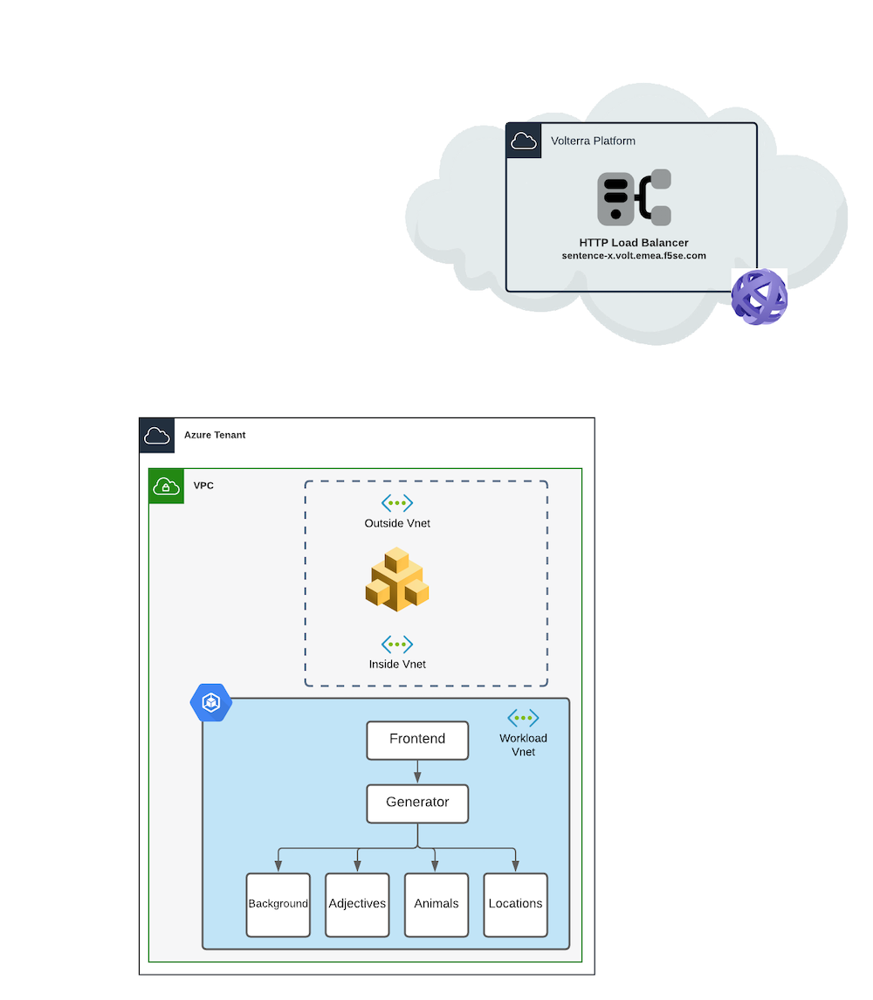
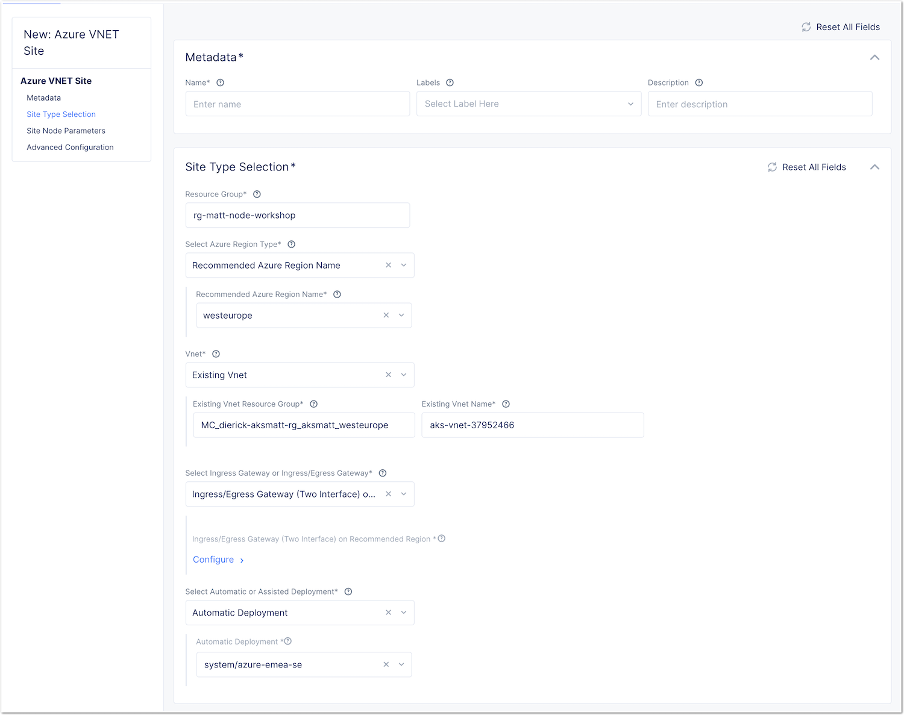
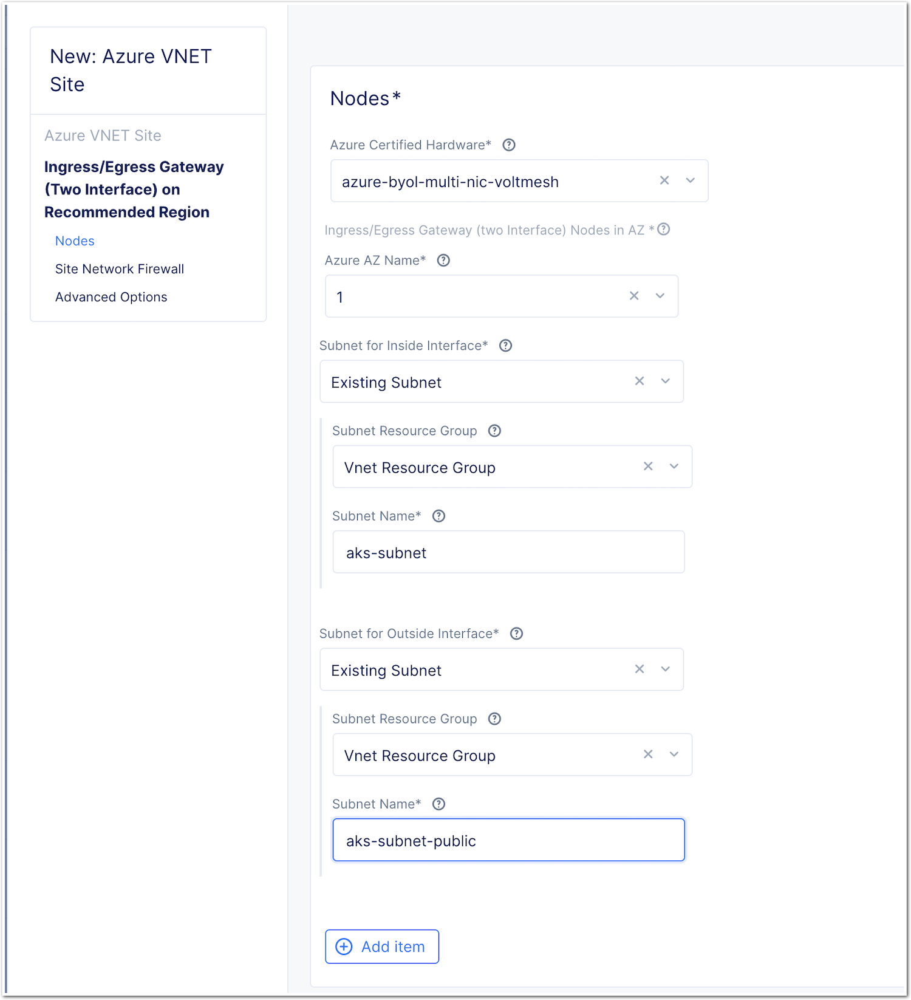
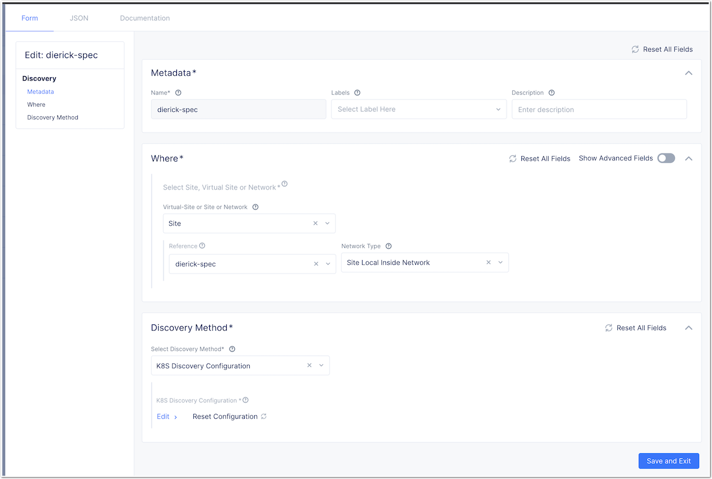
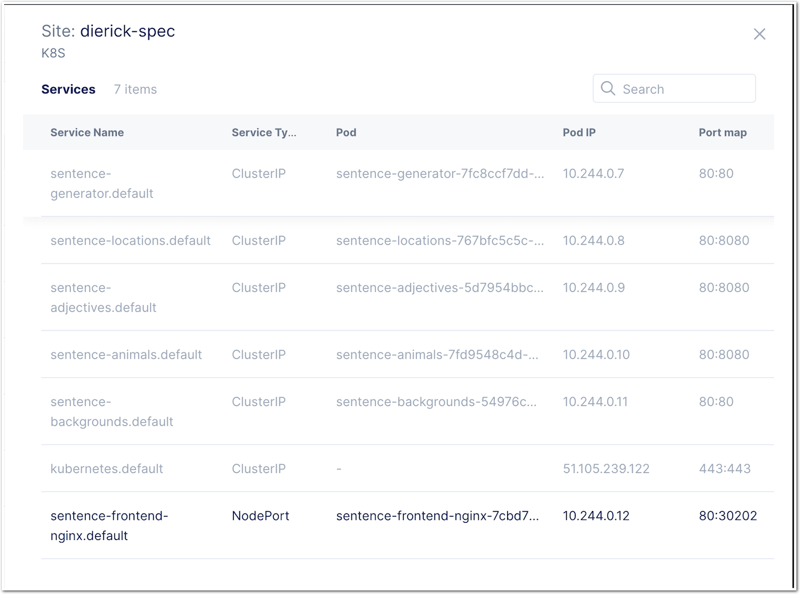

Workshop Volterra 10x > Class3 - Volterra Workshop for Modern App Specialists > Module 1 Source |
Lab 2 - Deploy the app in Azure AKS and expose it on Volterra Global Network¶
Deploy an AKS in Azure¶
Note
Check your AZ CLI is up and running in the right Tenant (F5 Sales) and Subscription (f5-AZR_4261_SALES_EMEA_SE - 1005fe30-e19e-4091-8480-8b61ecb8106e).
- az account list
{
"cloudName": "AzureCloud",
"homeTenantId": "e569f29e-b098-4cea-b6f0-48fa8532d64a",
"id": "1005fe30-e19e-4091-8480-8b61ecb8106e",
"isDefault": true,
"managedByTenants": [
{
"tenantId": "dd3dfd2f-6a3b-40d1-9be0-bf8327d81c50"
}
],
"name": "f5-AZR_4261_SALES_EMEA_SE",
"state": "Enabled",
"tenantId": "e569f29e-b098-4cea-b6f0-48fa8532d64a",
"user": {
"name": "M.Dierick@F5.com",
"type": "user"
}
If needed, you can switch to the EMEA-SE subs : az account set –subscription “f5-AZR_4261_SALES_EMEA_SE”
Clone this Git to your laptop (dev branch) : https://github.com/f5devcentral/volterra-workshop-10x
In the
devbranch, enter to the folderlabs-content/class3/terraformModify
variables.tfaccording your project.Warning
Volterra does not support objects > 64 characters. So, use short name in your prefix and cluster name. 10 characters max per variable.
variable "resource_prefix" { default = "Matt" } variable "cluster_name" { default = "akscluster" description = "K8S Cluster for Matt" } variable "location" { default = "westeurope" description = "The Azure Region in which all resources in this example should be provisioned" } variable "vm_size" { default = "Standard_B2ms" description = "2 vpus, 8 GiB memory" }Deploy your Terraform plan
terraform init terraform plan terraform apply
Note
Do not close your terminal, because the outcomes will be used in the next step to download your kubeconfig
Get your kubeconfig file from yoru Azure AKS :
az aks get-credentials --resource-group <YOUR-RG> --name <YOUR_CLUSTER_NAME> --file kubeconfig-myname
Publish the App without Colors microservice¶
- Use your favorite k8s client (kubectl, Lens …) and connect to your cluster
- Deploy the 2 manifests to publish the sentence app on your AKS
- Deploy labs-content/class3/k8s-deployments/aks-sentence-deployment.yaml
- Deploy labs-content/class3/k8s-deployments/aks-sentence-deployment-nginx.yaml
Note
Wait few seconds, and try to connect to the Azure LB created by the manifest
Expose the app with F5 Distributed Cloud¶
- DELETE the
labs-content/class3/k8s-deployments/aks-sentence-deployment-nginx.yamlmanifest so that we can now push the samewithouta LB - PUSH the
labs-content/class3/k8s-deployments/aks-sentence-deployment-nginx-private.yamlmanifest
Note
Check the LB service is deleted. If not, delete it manually.
Note
Now, Sentence app is not published externally. A voltNode is required to access the app.
Deploy a new Azure Vnet Site¶
First, in Azure Portal, create a new
Subnetin your Vnet. The Terraform only created one Subnet (10.240.0.0/16). This subnet is our private subnet.- Create a new
subnetin the same Vnet (10.241.0.0/16). Name itaks-subnet-public.
- Create a new
Deploy a Azure VNET Volterra Node (Dual NIC) and assign the existing private and public subnets from your AKS Vnet.
 Note
The resource group must be a new resourve group. You can’t use an existing one.
- For the Cloud Credentials, select
azure-emea-se - Paste your public SSH key in case you need to connect to it for troubleshooting
- For the Cloud Credentials, select
Applythe Azure Vnet SiteWAIT and
upgradethe node from the VotlConsole if required.
Discover the services¶
Create a service discovery
- Select your site, select
site local inside networkand upload your kubeconfig file - In
VIP Publishing Configuration settings, Don’t forget topublish fully qualified domain to VIP mapping
Warning
There is a known bug here, this can take up to 15 minutes to display the services.
- Select your site, select
You should see all services + nginx as a nodeport

Create an Global Load Balancer and expose Sentence App¶
Create an Origin Pool with Nginx Frontend webserver as a member
- Select k8s service type
- Enter service name (copy paste from service discovery)
- Select Inside network
- Port 80 (port of the service in K8S)
Note
Team discussion : How does Volterra manage to find the right back-end pool member (analogy to BIG-IP) ??? Check the LB and origin pool status.
Create an LB to expose the Nginx Frontend webserver
- Domain : sentence-<myname>.emea-ent.f5demos.com
- HTTPS auto-cert
- Select your Origin Pool
Note
Test your deployment